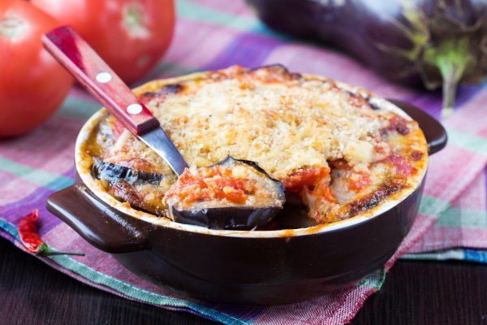

Moussaka

Ingredients:
- salt
- pepper
- nutmeg
- 1 tablespoon of honey
- 30 g of butter
- olive oil
- 1 onion
- 5 tomatoes (+/- a brick of tomato coulis)
- 2 eggplants
- 5 medium potatoes
- 200g of texturized soja
- 1 tablespoons of cinnamon
For the béchamel:
- 3 tablespoons of flour
- 20 g of butter
- 35 cl of milk
Instructions:
Preparation of the tomato sauce
- Slice the onions and brown them in a small casserole dish.
- Add the tomatoes cut into large cubes and 2 big tablespoons of olive oil, the cinnamon, the honey, salt and pepper. Let everything reduce for 25 minutes over medium heat. You should obtain a sauce, which can be homogenized with ready-made tomato coulis.
Note: If the sauce is too acidic, you can add a small pinch of bicarbonate of soda to balance the acidity.
Preparation of the eggplants
- Cut the eggplants into slices (without peeling them), salt generously, and let them drain while you do the next step. Tip for draining the eggplants: in a dish, alternate a layer of salted eggplant slices and a layer of absorbent paper or leave them in a colander.
Preparation of the potatoes
- Peel and cut the potatoes into thin slices.
- Arrange the potato slices in the bottom of a fairly high, oiled gratin dish. Baste the potatoes with a little (3 tablespoons) of the juice released by the simmering tomatoes.
- Place the potato dish under the grill for 5 to 15 minutes depending on your oven, so that they brown.
Prepare the montage
- Now that they have drained, place the eggplant slices in the pan over high heat to grill them a little on each side, set aside.
- Add the texturized soja to the tomato-onion sauce and lower the heat (very low).
- Remove the potato dish from the oven and preheat the oven to 200°C (thermostat 6-7).
Preparation of the béchamel
- In a small casserole dish over low heat, brown the 20 g of butter, add the flour and mix until smooth.
- Gradually add the milk, stirring constantly, this can take a good 10 minutes, you should get a fairly thick sauce.
- Salt, pepper and grate a little nutmeg.
Assembly of the moussaka
- Assembly of the moussaka. On top of the layer of potatoes, spread half of the minced meat with the tomato, then half of the eggplants, then the other half of the meat, then the other half of the eggplants, a drizzle of olive oil and finish with the béchamel.
- Place everything in the oven at 200°C (thermostat 6-7) and cook for 1 hour (the béchamel should be crispy and golden).